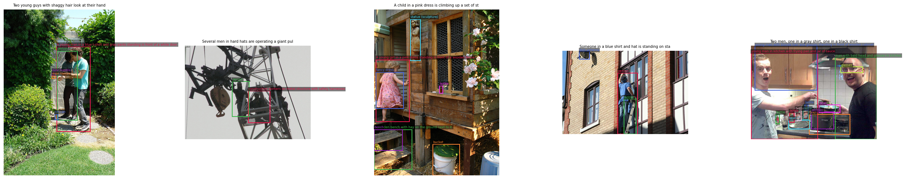

GRAFT: Region-Grounded
Fine-Tuning of SigLIP
Vision-language models trained on global image–caption contrastive objectives know what an image depicts, but not where. GRAFT teaches spatial grounding into a frozen SigLIP-B/16-384 using a tiny LoRA adapter (295K params, 0.14%) and a FILIP-style region loss on phrase→bounding-box pairs — lifting Flickr30k Pointing Game accuracy from a 14.74% baseline to 26.16% by eliminating train/eval representation mismatches.
The dominant gain came from aligning train-time and eval-time representations, not from loss design or model capacity.
Early versions trained patch features through the full self-attention layer but evaluated them through a MaskCLIP bypass, and represented phrases by a mean over all tokens while eval used only the EOS token. The gradient was sharpening the wrong vectors.
Installing the MaskCLIP bypass during training (vision side) flipped the model from below baseline to +3.94pp on the 3-seed mean. Switching the region loss to the EOS phrase feature (text side) added +2.08pp and collapsed seed variance 6×. Doubling the region-loss weight, adding LoRA capacity, and reformulating the patch aggregation all moved the mean within noise — the representation mismatch was the real lever.
Frozen Backbone + LoRA
SigLIP-B/16-384 stays frozen (729 patches, 27×27 grid). A rank-4 LoRA adapter on the vision-tower q/v projections carries all trainable capacity.
Global + Region Loss
Sigmoid-SigLIP global loss on pooled image ↔ caption, plus a FILIP-style region loss between EOS phrase features and in-bbox patch features, max-pooled per image.
Representation Alignment
MaskCLIP attention bypass on the vision side and EOS-token features on the text side make the training path byte-for-byte identical to the eval path. A best-PG snapshot restores the peak checkpoint.

| Version | Change | Pointing Game | Δ vs B0 |
|---|---|---|---|
| B0 | Frozen SigLIP baseline | 14.74% | — |
| v2 | + MaskCLIP bypass during training | +3.94% (3-seed mean) | +3.94 |
| v10 | + EOS-aligned region loss + best-PG snapshot (locked, 3-seed) | 20.76 ± 0.41% | +6.02 |
| v11 | 5 epochs, per-epoch cosine restarts (single seed) | 26.16% (test) | +11.42 |
| M_auto | Florence-2 caption-grounded phrases (no human boxes) | 23.35% | +8.61 |